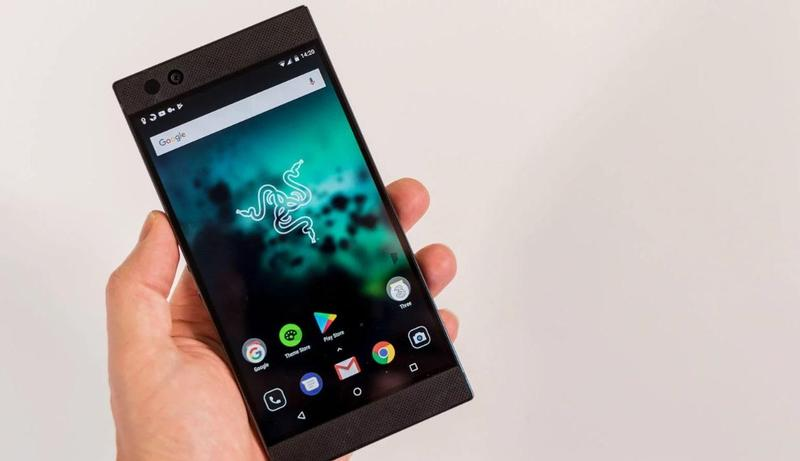

| Foto |
Nombre del dispositivo |
Descripción |
Características |
 |
OnePlus 6 |
Aunque no cuente con todas las características con las que cuentan otros smartphone en esta lista, el OnePlus 6 sigue siendo
un smartphone excepcional. Estamos hablando de características que no tienen porque ser necesarias
para hacer que el teléfono sea bueno, como por ejemplo, que sea resistente al agua o que incluya
carga inalámbrica. Por todo lo demás el OnePlus 6 lo tiene todo: un diseño inmejorable, eficacia,
buen rendimiento y especificaciones de calidad. Y todo ello por un precio bastante razonable (y mucho
más barato que otros smartphones de gama alta).
|
- Android 8.1 Oreo con OxygenOS
- 6.28in Full HD+ (1080x2280) AMOLED display, 19:9, 402ppi
- Procesador Qualcomm Snapdragon 845 octa-core
- Adreno 630 gráficos
- 6/8GB RAM
- 64/128/256GB almacenamiento interno
- 16Mp and 20Mp cámaras traseras, f/1.7, 4K video a 60fps
- 16Mp cámara delantera, f/2.0
- 802.11 a/b/g/n/ac Wi-Fi
- Bluetooth 5.0
- 4G LTE (Cat 16)
- Dual nano-SIM
- NFC
- Auriculares jack
- Sensor huella digital
- USB-C
- 3,300mAh batería no extraíble con Dash Charge
- 156.1x75x7.75 mm
- 177 gramos
|
 |
Samsung Galaxy S9 |
No hay duda alguna: el Galaxy S9 es uno de los mejores smartphones del año. Ofrece una experiencia diez en muchos aspectos:
diseño, hardware, software… el Galaxy S9 es un teléfono atractivo para todo tipo de usuarios. Si
tienes un presupuesto (todavía) más elevado, puedes optar por el Galaxy S9+, si te interesa una cámara
extra, una pantalla más grande y una serie de mejoras internas, aunque el aumento de memoria RAM
y almacenamiento y la pantalla más grande no son tan notables como esperábamos.
|
- Android 8.0 Oreo
- 5.8in Quad HD+ (2960x1440) 18.5:9 SuperAMOLED Infinity Display
- Exynos 8910 octa-core procesador
- 4GB RAM
- 64GB almacenamiento interno
- microSD card slot (up to 400GB)
- 12Mp rear-facing camera with OIS and f/1.5
- 8Mp cámara frontal
- Pressure sensitive home button
- Escáner de huella digital
- Heart rate monitor
- 11ac dual-band Wi-Fi
- Bluetooth 5.0 with aptX
- GPS
- NFC
- 4G LTE Cat 16
- Auriculares jack
- USB-C
- 3000mAh batería no extraíble
- Carga inalámbrica
- IP68 a prueba de agua y polvo
- 69x148x8.5 mm
- 163 gramos
|
 |
LG G7 ThinQ |
Si lo que quieres son cámaras de gran angular en un teléfono de gama alta, entonces el LG G7 es una opción de compra recomendada,
sobre todo ahora que LG ha incorporado el modo retrato en sus fotografías. Aunque la pantalla sigue
siendo LCD se ve con mucho brillo y nitidez. Además, es resistente al agua, tiene carga inalámbrica,
entrada de auriculares jack y Quad DAC. En resumen: uno de los mejores smartphone Android del año
sin duda alguna.
|
- 6.1in 19.5:9 (3120x1440, 564ppi) MLCD+ display, Gorilla Glass 5
- Android Oreo 8.0 with UX 6.0+ and Google Assistant
- Qualcomm Snapdragon 845
- 4 / 6GB LPDDR4
- 64 / 128 UFS 2.0, microSD up to 2TB(?)
- 16Mp f/1.6 + 16Mp f/1.9 wide-angle cameras, 8Mp f/1.9 selfie camera
- 802.11ac Wi-Fi, Bluetooth 5.0, NFC, USB-C (3.1)
- IP68, MIL-SPEC 810G compliant, 32-bit Hi-Fi Quad DAC, face/voice/fingerprint recognition
- 3,000mAh, wired and wireless charging, Quick Charge 3.0
- 153.2x71.9x7.9mm
- 162g
|
 |
Google Pixel 2 XL |
El Pixel 2 XL es un teléfono fantástico. Está muy bien diseñado y fabricado y su estética es muy agradable. Como pegas le
sacamos su falta de toma de auriculares o ranura para tarjeta microSD. Es aquí donde entra el Galaxy
S8 Plus: es más barato y sí que tiene las características de las que el Pixel 2 XL carece. Sin embargo,
el teléfono de Google gana en calidad de cámara. Además tiene la ventaja de recibir todas las actualizaciones
de Google y sus aplicaciones de forma inmediata, y de disponer de almacenamiento ilimitado de fotos
y vídeos durante tres años.
|
- 6in pOLED display (2880 x 1440, 538ppi)
- Snapdragon 835 CPU
- Adreno 540 GPU
- 4GB RAM
- 64GB or 128GB storage
- 12.2MP rear camera
- 8MP front camera
- 3520mAh battery
- 4G LTE
- 802.11ac Wi-Fi
- Bluetooth 5.0
- NFC
- GPS USB-C (USB 3.1 Gen 1) charging port
- Fast Charging support
- Android 8.0 Oreo
|
|  |
Razer Phone |
Si eres un gamer o amante de los videojuegos, el Razer Phone es tu teléfono. Puede que no pueda competir con otros smartphone
con mejor diseño y especificaciones, pero tal y como decimos, el Razer Phone será buen teléfono para
cualquier gamer.
Tiene una pantalla de 120Hz, lo que supone una gran diferencia a la hora de jugar a un videojuego,
sobre todo si lo combinas con sus altavoces estéreo frontales Dolby ATMOS y una aplicación que te
permite modificar el rendimiento de los juegos según la aplicación.
Aunque la pantalla sea perfecta, no podemos decir lo mismo sobre su cámara. La configuración
de su doble cámara trasera no es mala, pero la calidad de las imágenes que captura no puede competir
con la calidad de otros buques insignia como el Huawei o el Samsung.
Pero bueno, si tu prioridad son los videojuegos, el Razer Phone te ofrece una experiencia
de juego en Android de muy buena calidad, además, es mucho más barato que otros teléfonos de alta
gama.
|
- 5.7in (2560x1440, 515ppi)
- Android 7.1.1 Nougat
- Qualcomm MSM8998 Snapdragon 835 procesador
- Octa-core (4x2.35 GHz Kryo & 4x1.9 GHz Kryo) CPU
- Adreno 540 GPU
- 8GB RAM
- 64GB almacenamiento (hasta 2TB con microSD)
- Lector de huellas digitales
- Cámaras duales traseras: 12Mp (f/1.8, 25mm)and 12Mp (f/2.6), 2x zoom óptico, fase detección
de autofoco, dual-LED dual-tone flash
- 8Mp cámara frontal (f/2.0)
- 802.11ac Wi-Fi
- Bluetooth 4.2
- A-GPS
- NFC
- USB 3.1, Type-C 1.0
- batería de litio-ion no extraíble 4,000mAh battery
- 158.5x77.7x8 mm
- 197 gramos
|
 |
Huawei P20 Pro |
El modelo P20 de Huawei es uno de los teléfonos top de este año. Sin duda, debe de estar en la lista al lado de los impresionantes
Samsung Galaxy S9 y iPhone X.
Obviamente, tiene algún que otro fallo, como la falta de estabilización en el vídeo 4K,
la inexistencia de toma de auriculares o carga inalámbrica.
Si la calidad de las fotos se encuentra entre tus requisitos principales a tener en cuenta
antes de comprar un móvil, entonces el Huawei P20 Pro es tu teléfono ideal. Cuenta con tres cámaras
de 20Mp, 40Mp y 8Mp. La calidad de la cámara es indiscutible.
Además, tiene una batería de larga duración, ranuras para dos tarjetas SIM y una gran pantalla
para disfrutar todavía más de sus impresionantes fotos. El P20 mejora con creces a su modelo anterior,
así que su aumento de precio merece la pena.
Los únicos fallos que podemos sacarle a este buque insignia son la falta de resistencia
al agua o waterproof y la pantalla LCD en vez de OLED.
|
- Android Nougat 8.1 + EMUI 8.1
- 6.1in 2244x1080, 18.7:9 OLED display, 408ppi
- 2.4GHz HiSilicon Kirin 970 octa-core processor
- Mali-G72 MP12
- 6GB RAM / 128GB storage
- Cameras: 40Mp with OIS (colour) + 8Mp telephoto (3x) + 20Mp, f/1.6 (monochrome)
- Front camera: 24Mp, f/2.0
- 802.11 ac Wi-Fi (2.4 and 5GHz)
- Bluetooth 4.2
- NFC
- GPS + Glonass
- 4G LTE Cat 18
- Dual nano-SIM
- 4000mAh, non-removable battery
- USB-C SuperCharge
- IP67 rating
- 7.9mm
- 174g (TBC)
|